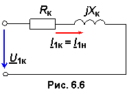
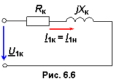
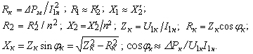
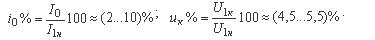

6.3.2. Опыт короткого замыкания
При опыте КЗ вторичную обмотку замыкают накоротко (рис. 6.6), а к первичной подводят пониженное напряжение U1к = (0,05...0,1) U1н, при котором токи в обмотках равны номинальным токам, т. е. I1 = I1к = I1н и I2 = I2к = I2н. При пониженном напряжении U1 = U1к магнитный поток в сердечнике Ф мал, поэтому потерями мощности в стали ΔРcm трансформатора пренебрегают.
Так как в реальном трансформаторе сопротивления R0 >> (R1 + R'2) и X0 >> (X1 + Х'2), то в схеме замещения исключают поперечную ветвь. При этом показание ваттметра приближенно равно активным потерям в обмотках (потерям в меди).


Откуда

В каталожных данных на силовой трансформатор кроме значений номинальной мощности Sн в кВ·А и номинальных напряжений U1н/U2н приводят также значения потерь в стали ΔPcm = P0 и в меди ΔPм. Значения тока ХХ и напряжения КЗ трансформатора выражают в процентах:


